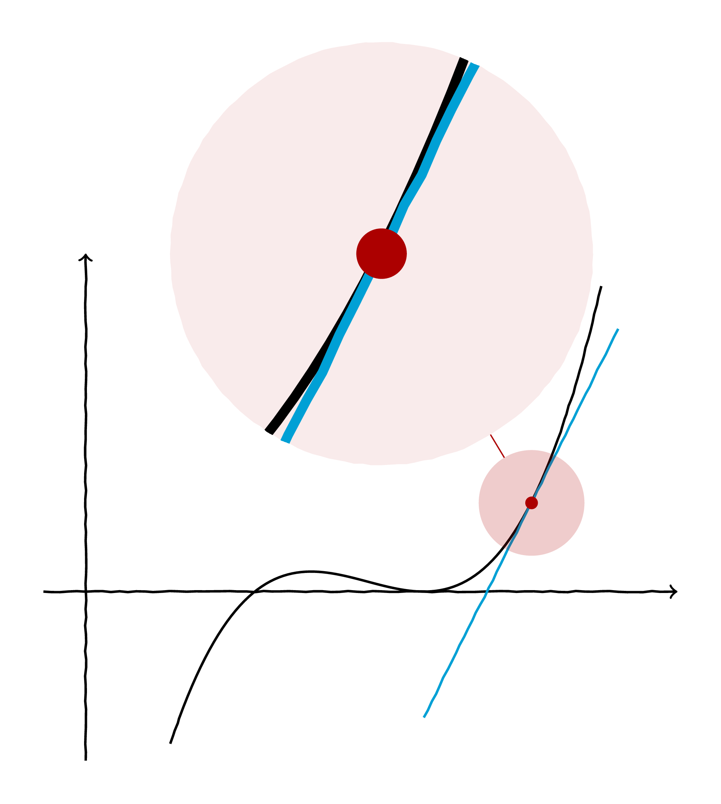
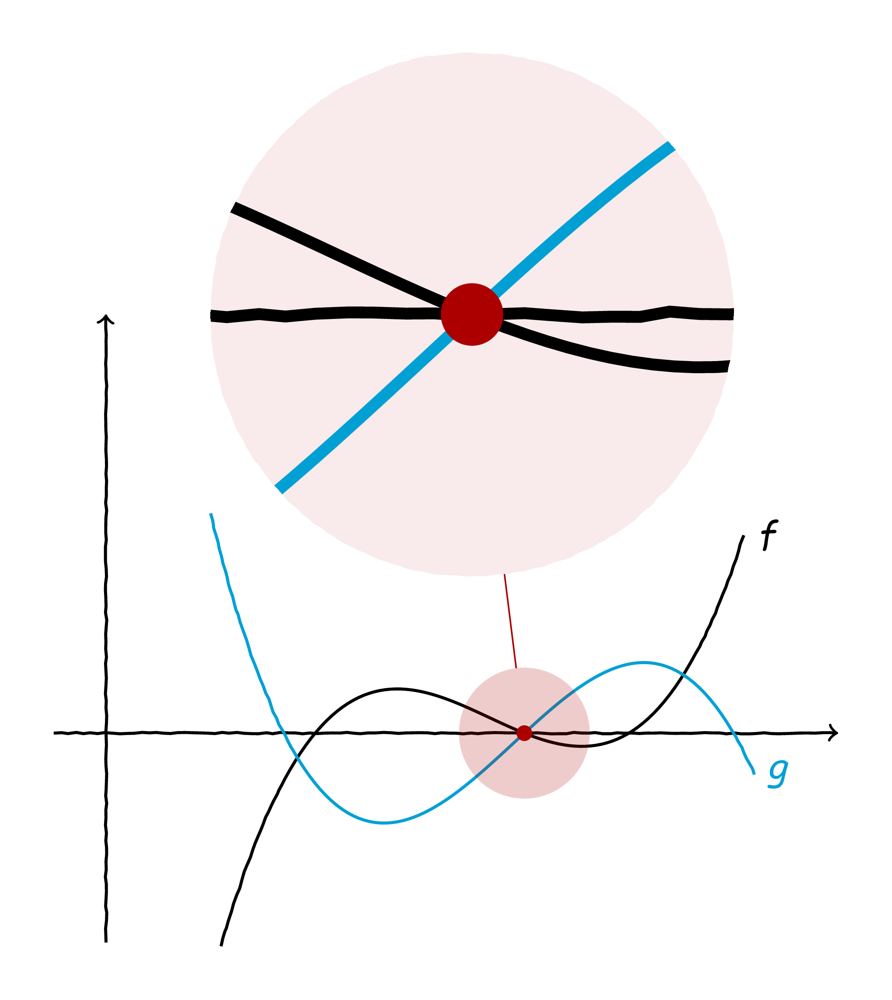
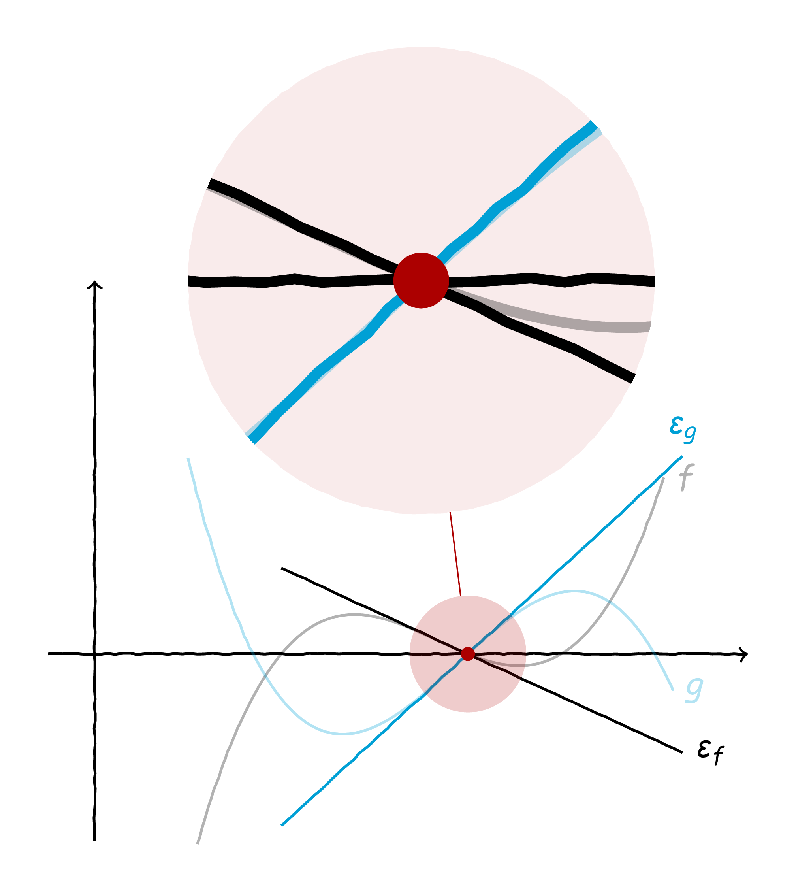
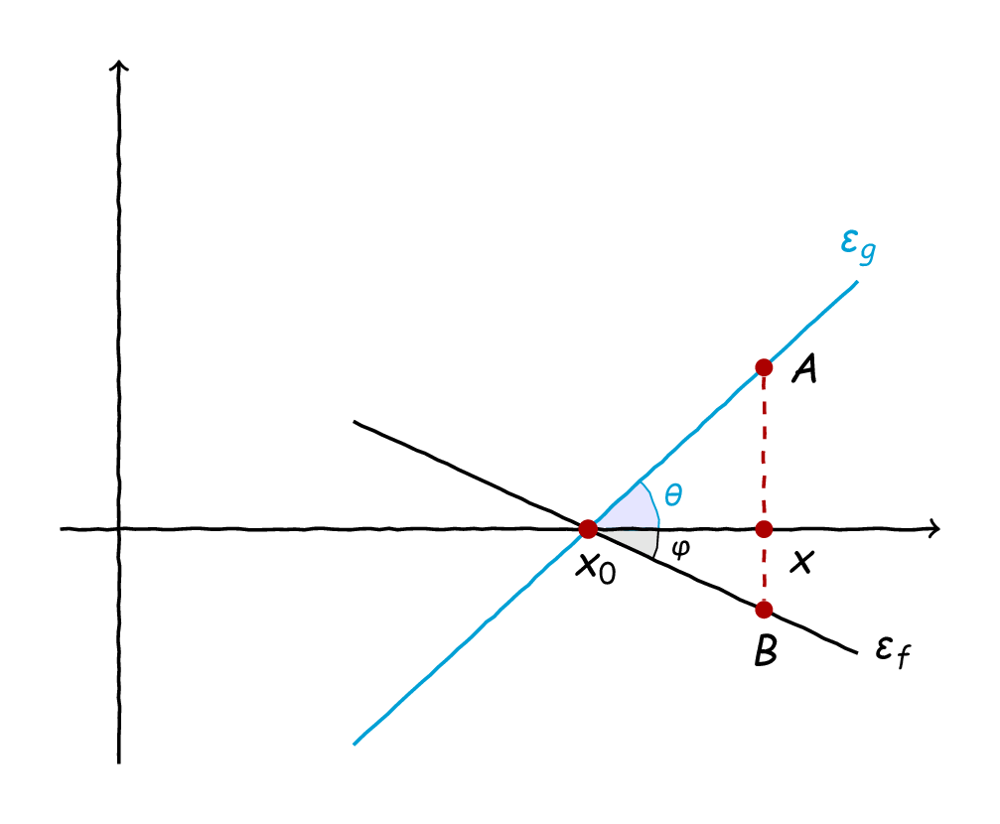
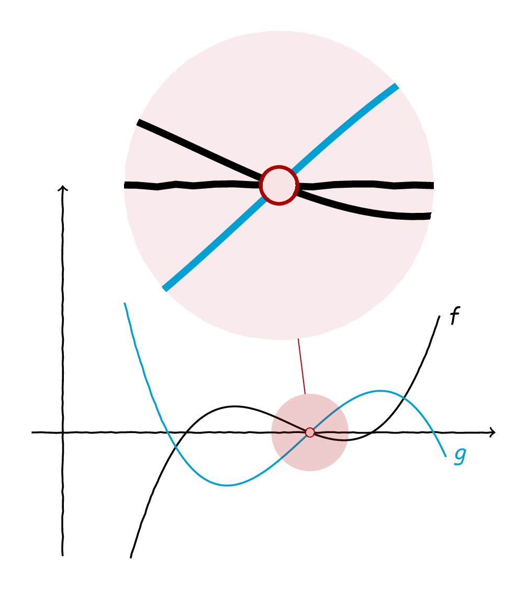
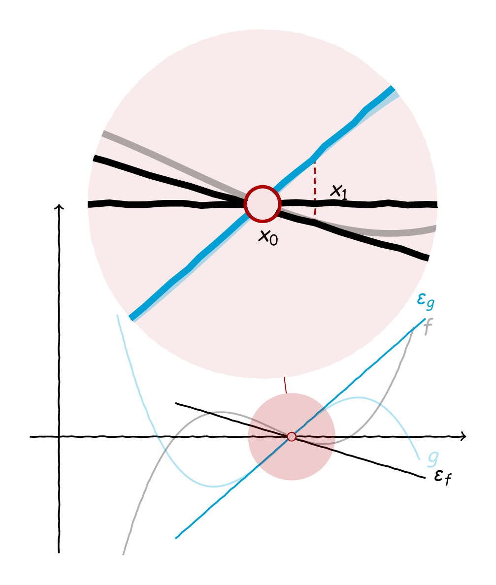
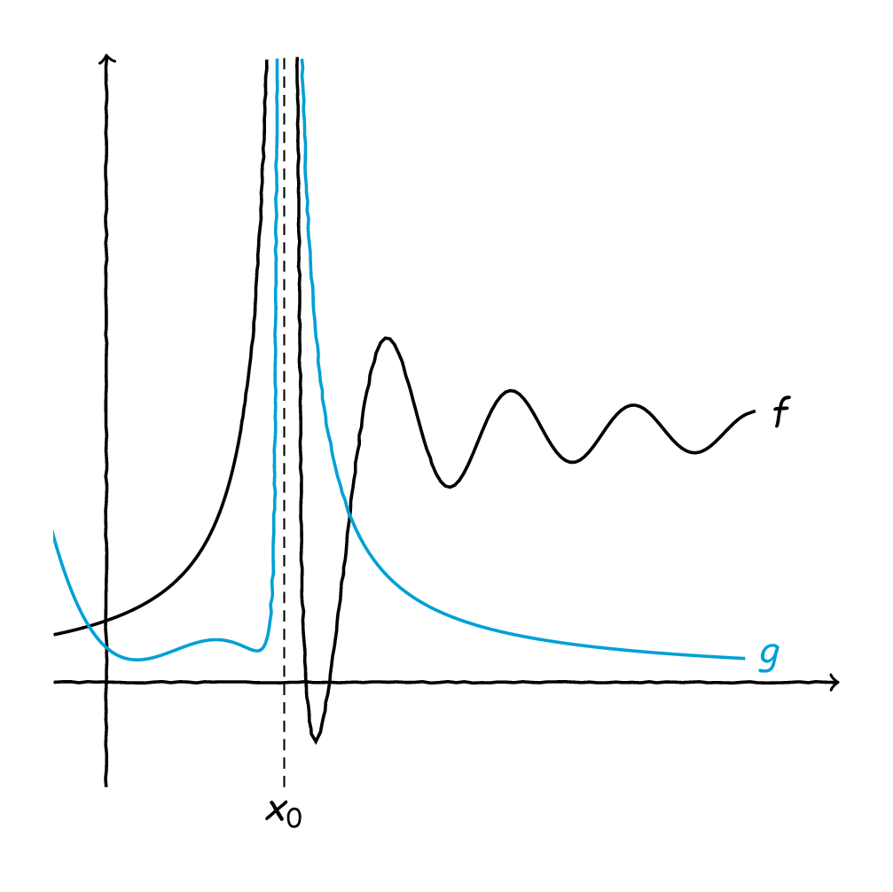
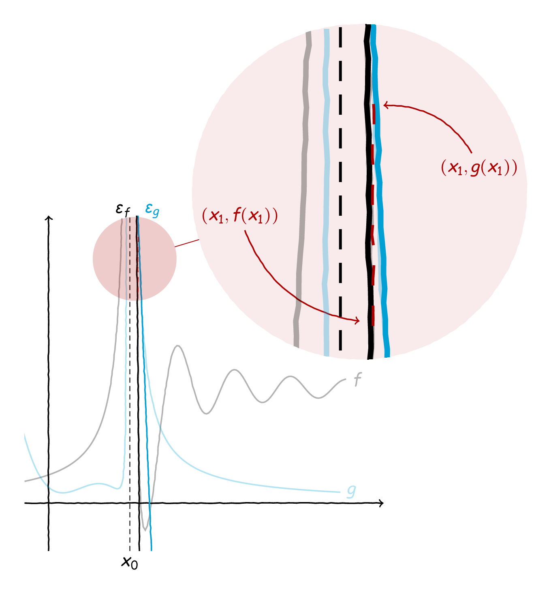

Ο De L’Hôspital στην Χώρα των Τριγώνων#

Ο καθ’όλα φθινοπωρινός πίνακας Τα κίτρινα λιβάδια της Gennevilliers του Gustave Caillebotte.#
Ο φόβος κι ο τρόμος όλων των ορίων κι όλων των μαθηματικών της Γ” Λυκείου είναι, αναμφίβολα, οι κανόνες De L’Hôspital (DLH, από εδώ και στο εξής, γιατί αυτό το «ô» είναι πολύ κουραστικό για όσους δεν έχουμε κάποιο γαλλικό layout στο πληκτρολόγιο). Κάνουν τα εύκολα δύσκολα και τα δύσκολα εύκολα όταν πρόκειται για όρια, λύνουν τα χέρια των μαθητών κατά κάποιους και τους αποχαυνώνουν, κατά κάποιους άλλους. Αποκαλύπτουν λεπτά σημεία σε σχέση με τη διαίσθηση των ορίων πηλίκων και συνάμα κρύβουν πολλές φορές την ουσία ενός υπολογισμού. Γενικά, αν δεν το έχετε καταλάβει ήδη, οι κανόνες DLH είναι ίσως ένα από τα πιο αμφίσημα σημεία της σχολικής ύλης. Κι αυτή η αμφισημία τους είναι που τους καθιστά και τόσο ενδιαφέροντες - ή, τουλάχιστον, έτσι λέμε μεταξύ μας οι μαθηματικοί.
Θέλω αποδείξεις και ονόματα…#
Ένα πολύ ελκυστικό κομμάτι σε ό,τι αφορά τα σχολικά μαθηματικά είναι πώς μπορεί κανείς να «κατεβάσει» διάφορες αποδείξεις στο επίπεδο του λυκείου έτσι ώστε να είναι «χρήσιμες» για την τάξη. Λέγοντας «χρήσιμες», αναφερόμαστε στον επεξηγηματικό χαρακτήρα της απόδειξης κι όχι τόσο στον ρόλο της ως εργαλείο συμπερασμού. Αν ένα αποτέλεσμα φαίνεται πειστικό από μόνο του, πολλές φορές είναι εύκολο να το δεχτούμε και χωρίς απόδειξη, ενώ, σε αντίθετη περίπτωση, συνήθως απαιτούμε κάποια απόδειξη. Μάλιστα, ιδανικά αυτή η απόδειξη πρέπει να είναι και κάπως «πειστική» κι όχι απλά μία τεχνική απόδειξη που δεν αποκαλύπτει καμία ενδότερη πτυχή του φαινομένου που μας απασχολεί. Αυτές είναι κι οι αποδείξεις που έχει περισσότερο νόημα να παρουσιάζουμε σε μία τάξη, δεδομένου, ότι σίγουρα δεν έχουμε ούτε τον χρόνο ούτε τα μέσα να αποδείξουμε κάθε τι που ισχυριζόμαστε, ειδικά στα Μαθηματικά Προσανατολισμού της Γ” Λυκείου.
Περνώντας στους κανόνες DLH, η πλέον συνηθισμένη απόδειξη περνά μέσα από τα χωράφια του ΘΜΤ του Cauchy, το οποίο μπορεί να αποδειχθεί σχετικά απλά με χρήση του Θεωρήματος Rolle. Για την ακρίβεια, η απόδειξη του ΘΜΤ του Cauchy είναι μία «γενίκευση» της απόδειξης του ΘΜΤ ή, ακόμα καλύτερα, είναι μία «γενίκευση» κάποιων κλασικών τεχνικών που εφαρμόζουμε σε ασκήσεις που απαιτούν εφαρμογή του Θεωρήματος του Rolle. Αλλά, έχει νόημα να αποδείξουμε ένα ολόκληρο θεώρημα, γενίκευση μάλιστα ενός γνωστού θεωρήματος της ύλης, απλά και μόνο για να το χρησιμοποιήσουμε μία και μόνο φορά σε ένα και μόνο σημείο της ύλης;
Μάλλον όχι, γι” αυτό και πρέπει να σκεφτούμε κάποιον άλλον τρόπο να αποδείξουμε τους κανόνες του DLH στα πλαίσια της ύλης που έχουμε στα χέρια μας. Η αλήθεια είναι ότι δε θα αποδείξουμε ακριβώς αυτούς τους κανόνες, αλλά θα τους «αποδείξουμε», κάνοντας κάποιες μικρές αβαρίες στην πορεία μας. Αν και όχι φορμαλιστικά πλήρεις, οι «αποδείξεις» που θα δούμε παρακάτω κουβαλάνε αρκετή διαίσθηση μαζί τους, πράγμα που συνήθως έχει μεγαλύτερη αξία από μία απλή και στείρα απόδειξη, απλά και μόνο στα πλαίσια μίας άκρατης «αποδειξομανίας».
Η εφαπτομένη ως βέλτιστη προσέγγιση#
Κεντρικό ρόλο σε όσα θα παρουσιάσουμε παρακάτω θα παίξει η έννοια της εφαπτομένης και, μάλιστα, η έννοια της εφαπτομένης ως βέλτιστης γραμμικής προσέγγισης της γραφικής παράστασης μίας συνάρτησης σ” ένα σημείο. Τώρα, αυτό ακούστηκε λίγο περίπλοκο, αλλά δεν είναι. Για την ακρίβεια, όσα θα συζητήσουμε από εδώ και στο εξής, είναι οι χίλιες λέξεις που αντιστοιχούν στην παρακάτω εικόνα:

Ζουμ, ζουμ, ζουμ!#
Ας πάρουμε μία συνάρτηση \(f\) ορισμένη γύρω από έναν αριθμό \(x_0\in\mathbb{R}\) κι ας υποθέσουμε ότι η \(f\) είναι παραγωγίσιμη στο \(x_0.\) Τότε, η εξίσωση της εφαπτομένης της εκεί είναι η ακόλουθη:
Ας μελετήσουμε τώρα λίγο το ακόλουθο όριο:
Το παραπάνω όριο δεν είναι τίποτα άλλο παρά η διαφορά της \(f\) από την εφαπτομένη της. Συνεπώς, αυτό που καταλαβαίνουμε από τα παραπάνω είναι ότι για μία παραγωγίσιμη συνάρτηση σε κάποιο \(x_0,\) αν περιοριστούμε αρκετά κοντά στο \(x_0\) τότε αυτό που θα παρατηρήσουμε είναι ότι η γραφική παράσταση της \(f\) είναι «σχεδόν» ευθεία. Ή, πιο σωστά, ας υποθέσουμε ότι κάποιος σατανικός μαθηματικός έρχεται και μας ρωτάει:
«Υπάρχει κάποιο διάστημα γύρω από το \(x_0\) στο οποίο η γραφική παράσταση της \(f\) να είναι «σχεδόν» ευθεία;»
Σατανικός Μαθηματικός, Νοέμβριος, 2022
Μπορούμε να απαντήσουμε καταφατικά στην παραπάνω ερώτηση εφόσον η \(f\) είναι παραγωγίσιμη - και η απόδειξη είναι ο υπολογισμός που κάναμε παραπάνω. Άρα, μπορούμε να σκεφτόμαστε μία συνάρτηση κοντά σε ένα σημείο του πεδίο ορισμού της που είναι παραγωγίσιμη σαν μία «σχεδόν» ευθεία, χωρίς αυτό μάλιστα να απέχει πολύ από την πραγματικότητα. Αυτή η διαισθητική εικόνα μίας παραγωγίσιμης συνάρτησης θα μας φανεί ιδιαίτερα χρήσιμη σε όσα έπονται.
Μία απλή περίπτωση#
Στη σχολική ύλη συναντάμε δύο κανόνες DLH και, μάλιστα, σε μία από τις πιο γενικές μορφές τους. Θα ασχοληθούμε πρώτα με τον κανόνα που αφορά όρια της μορφής \(\frac{0}{0}\) καθώς είναι κάπως πιο απλός στη διαπραγμάτευσή του - τουλάχιστον, με γεωμετρικούς όρους, όπως θα προσπαθήσουμε να κάνουμε εδώ. Έχουμε και λέμε, λοιπόν:
Αν \(f,g&fg=362e77&bg=d9d9d9\) είναι δύο συναρτήσεις ορισμένες και παραγωγίσιμες κοντά σε κάποιο \(x_0\in\mathbb{R}&fg=362e77&bg=d9d9d9\) έτσι ώστε \(\lim_{x\to x_0}f(x)=\lim_{x\to x_0}g(x)=0&fg=362e77&bg=d9d9d9\) και το όριο \(\lim_{x\to x_0}\frac{f'(x)}{g'(x)}&fg=362e77&bg=d9d9d9\) υπάρχει και είναι είτε πραγματικός αριθμός είτε άπειρο, τότε ισχύει και ότι \(\lim_{x\to x_0}\frac{f(x)}{g(x)}=\lim_{x\to x_0}\frac{f'(x)}{g'(x)}.&fg=362e77&bg=d9d9d9\)
Πρακτικά, αν έχουμε ένα όριο της μορφής \(\frac{0}{0}\) και αριθμητής και παρονομαστής είναι παραγωγίσιμοι με το όριο του πηλίκου των παραγώγων τους να υπάρχει, τότε μπορούμε απλούστατα να υπολογίσουμε αυτό αντί για το αρχικό μας όριο. Η παραπάνω διατύπωση είναι αρκετά γενική, είναι η αλήθεια, καθώς δεν υποθέτει τίποτα για τις συναρτήσεις μας σε σχέση με το \(x_0\) - δεν χρειάζεται ούτε καν να ορίζονται εκεί. Ωστόσο, εμείς θα ξεκινήσουμε τη μελέτη μας με κάποιες απλουστευτικές υποθέσεις, για να κάνουμε τη ζωή μας πιο εύκολη. Αρχικά, θα υποθέσουμε ότι οι συναρτήσεις μας είναι είναι ορισμένες και στο \(x_0\) και είναι και παραγωγίσιμες εκεί. Ας μην μένουμε, όμως, μόνο στα λόγια. Ας πάρουμε δύο συναρτήσεις που να ικανοποιούν τις παραπάνω υποθέσεις, όπως φαίνεται και στο παρακάτω σχήμα:

Δύο συναρτήσεις…#
Τώρα, αφού έχουμε υποθέσει ότι οι συναρτήσεις μας είναι παραγωγίσιμες στο επίμαχο κόκκινο σημείο - το \(x_0\) δηλαδή - μπορούμε να σχεδιάσουμε εκεί τις εφαπτόμενές τους και να πάρουμε το παρακάτω σχήμα:

Δύο συναρτήσεις και οι εφαπτόμενές τους…#
Αφού έχουμε υποθέσει ότι γύρω από το κόκκινο σημείο οι συναρτήσεις μας είναι παραγωγίσιμες, εκεί κοντά μπορούμε να υποθέσουμε όπως εξηγήσαμε και παραπάνω, ότι οι εφαπτόμενές τους είναι αρκετά καλές προσεγγίσεις τους. Επομένως, μπορούμε να αγνοήσουμε εκεί κοντά τις γραφικές τους παραστάσεις και να ασχοληθούμε μόνο με τις αντίστοιχες εφαπτόμενες. Έτσι, σβήνοντας από το παραπάνω σχήμα τις δύο γραφικές παραστάσεις - και τον μεγεθυντικό μας φακό - έχουμε το ακόλουθο σχήμα:

Οι δύο εφαπτόμενες και κάτι… παραπάνω.#
Εντάξει, μας πιάσατε, έχουμε προσθέσει και λίγα ακόμα πράγματα πέρα από τις δύο ευθείες που θα μας βοηθήσουν στην ανάλυσή μας. Αρχικά, αφού έχουμε πει ότι \(f\approx\varepsilon_f\) και \(g\approx\varepsilon_g\) κοντά στο \(x_0\) τότε, εκεί κοντά, θα ισχύουν και τα εξής:
όπου με \(Ax, Bx\) εννοούμε το προσημασμένο μήκος των ευθυγράμμων τμημάτων με άκρα \(A,x\) και \(B,x\) αντίστοιχα. Συνεπώς, το όριο που αναζητούμε είναι, «περίπου», το εξής:
Τώρα, με λίγη απλή τριγωνομετρία, έχουμε τα εξής:
Τώρα, όμως, αν ξύσουμε λίγο το κεφάλι μας, θα θυμηθούμε ότι οι ευθείες \(\varepsilon_f\) και \(\varepsilon_g\) δεν είναι τίποτε άλλο παρά οι εφαπτόμενες των \(f\) και \(g\) στο \(x_0\) αντίστοιχα, επομένως οι κλίσεις τους συμπίπτουν με τις παραγώγους των \(f\) και \(g\) εκεί. Άρα, από τα παραπάνω έχουμε:
Συνεπώς, θα ισχύει και ότι:
που δεν είναι παρά το αποτέλεσμα που μας εγγυάται και ο αντίστοιχος κανόνας DLH.
Ή μήπως όχι;#
Αυτό που αποδείξαμε παραπάνω είναι το εξής:
Ο αντίστοιχος κανόνας DLH λέει κάτι αρκετά γενικότερο, ωστόσο:
Δηλαδή, στον γενικότερο κανόνα DLH δεν υποθέτουμε σε κανένα σημείο ότι οι παράγωγοι των επιμέρους συναρτήσεων υπάρχουν στο \(x_0\) αλλά ότι ορίζονται «εκεί γύρω» και ότι το όριο του πηλίκου τους υπάρχει. Αντιθέτως, στη μορφή του κανόνα που αποδείξαμε έχουμε κάνει την επιπλέον υπόθεση ότι οι παράγωγοι ορίζονται εκεί. Αυτό, τώρα, μπορεί σίγουρα να οδηγήσει σε παρανοήσεις ως προς τη γενικότητα του κανόνα DLH για τη μορφή \(\frac{0}{0},\) ωστόσο, δεν παύει να αποτελεί μία χρήσιμη ματιά στη διαίσθηση πίσω από τον κανόνα.
Για την ακρίβεια, αυτή ακριβώς η παρανόηση - που οδηγεί σε μία ασθενέστερη μορφή του κανόνα - μπορεί να αποτελεί ένα ενδιάμεσο βήμα σε μία πληρέστερη διαισθητική διερεύνηση. Ας υποθέσουμε ότι έχουμε δύο συναρτήσεις που, σε αντίθεση με τις παραπάνω, δεν είναι παραγωγίσιμες στο \(x_0.\) Για την ακρίβεια, ας υποθέσουμε ότι δεν είναι καν ορισμένες εκεί, πράγμα που εύκολα μπορούμε να πετύχουμε, απλά αφαιρώντας το σημείο ενδιαφέροντός μας:

Μία μικρή αλλαγή, που μας κάνει τη ζωή μας πολύυυυ δύσκολη.#
Τώρα, τίποτα από όσα είπαμε προηγουμένως δεν μπορεί να δουλέψει, τουλάχιστον όχι άμεσα, καθώς δεν μπορεί να γίνει λόγος για εφαπτόμενες των συναρτήσεών μας στο \(x_0\) καθώς δεν ορίζονται εκεί. Ωστόσο, έχουμε διάφορες υποθέσεις στο οπλοστάσιό μας που μπορούν να κάνουν τη ζωή μας κάπως πιο εύκολη.
Αρχικά, γνωρίζουμε ότι οι συναρτήσεις μας, αν και δεν ορίζονται στο \(x_0,\) είναι παραγωγίσιμες «εκεί γύρω».
Από το παραπάνω, συμπεραίνουμε ότι είναι και συνεχείς «εκεί γύρω».
Συνεπώς, όσα είπαμε παραπάνω, μπορούμε να τα πούμε και πάλι, με το ίδιο ακριβώς σκεπτικό, αλλά όχι για το \(x_0\) παρά μόνο για σημεία «εκεί γύρω».
Εγείρεται, λοιπόν, το ερώτημα: Μπορούμε να βρούμε ένα σημείο «γύρω» από το \(x_0\) που να είναι «σαν να ήταν το \(x_0;\) »
Η απάντηση, παραδόξως (ή και όχι), είναι εμφατικά καταφατική. Αλλά, ας δούμε γιατί. Όπως είπαμε και παραπάνω, οι συναρτήσεις μας είναι συνεχείς κοντά στο \(x_0\) και, επιπλέον, ισχύει και εκ προοιμίου ότι:
Επομένως, αν θεωρήσουμε μία συνάρτηση σαν την:
τότε η \(\hat{f}\) είναι συνεχής σε όλο το \(D_f\cup\{x_0\}\) - είναι αυτό που λέμε «συνεχής επέκταση» της \(f.\) Ανάλογα μπορούμε να εργαστούμε και για την \(g,\) ορίζοντας μία συνεχή της επέκταση ως εξής:
Τώρα, με τις \(\hat{f},\hat{g}\) έχουμε μία κατάσταση σχεδόν όπως πριν, με τη μόνη διαφορά ότι δεν έχουμε την παραγωγισιμότητα στο \(x_0.\) Αλλά, εντάξει, μικρό το κακό. Από τη συνέχεια των \(\hat{f},\hat{g}\) στο \(x_0\) συμπεραίνουμε ότι, ε, αν θέλουμε να βρούμε ένα \(x_1\) κοντά στο \(x_0\) έτσι ώστε:
μπορούμε να το κάνουμε. Μπορεί αυτό το \(x_1\) να πρέπει να είναι πολύ κοντά στο \(x_0\) αλλά αυτό δεν έχει και πολλή σημασία, εμείς μπορούμε να το βρούμε. Παίζοντας τώρα με αυτό το \(x_1\) παίρνουμε εκεί τις εφαπτόμενες των δύο συναρτήσεων και έχουμε μία κατάσταση όπως στο παρακάτω σχήμα:

Ζουμάροντας λίγο δίπλα από τον στόχο…#
Στην ουσία, έχουμε την ίδια κατάσταση με παραπάνω, απλά λίγο πιο δίπλα. Επομένως, όπως και παραπάνω, μπορούμε για το \(x_1\) να ισχυριστούμε το εξής:
Ε, αλλά, το \(x_1\) είναι πολύ κοντά στο \(x_0,\) επομένως, μπορούμε να γράψουμε, με την απαραίτητη αυτοπεποίθηση:
Διαισθητικά, αυτό δεν είναι και πολύ παράλογο, καθώς οι συναρτήσεις μας κοντά στο \(x_0\) είναι όπως και κοντά στο \(x_1\) (λόγω της συνέχειας) και κοντά στο \(x_1\) οι γραφικές τους παραστάσεις συμπίπτουν με τις εφαπτόμενές τους (λόγω παραγωγισιμότητας) και, όπως είπαμε παραπάνω, αυτό ακριβώς είναι που μας λέει και ο κανόνας DLH.
Συνεπώς, κομψότατα και με ολίγες αβαρίες, «αποδείξαμε» τους κανόνες DLH στην περίπτωση \(\frac{0}{0}.\) Τι γίνεται όμως στην περίπτωση \(\frac{\infty}{\infty};\)
Μακριά από το μηδέν…#
Όλα τα παραπάνω δουλεύουν σαν επιχειρήματα (κοντά) σε συγκεκριμένα σημεία. Ωστόσο, στα σχολικά βιβλία μπορεί κανείς να βρει και μία ακόμα διατύπωση των κανόνων DLH, που έχουν να κάνουν με όρια που απειρίζονται. Ας τους φρεσκάρουμε λίγο:
Αν \(f,g&fg=362e77&bg=d9d9d9\) είναι δύο συναρτήσεις ορισμένες και παραγωγίσιμες κοντά σε κάποιο \(x_0\in\mathbb{R}&fg=362e77&bg=d9d9d9\) έτσι ώστε \(\lim_{x\to x_0}f(x)=\lim_{x\to x_0}g(x)=\pm\infty&fg=362e77&bg=d9d9d9\) και το όριο \(\lim_{x\to x_0}\frac{f'(x)}{g'(x)}&fg=362e77&bg=d9d9d9\) υπάρχει και είναι είτε πραγματικός αριθμός είτε άπειρο, τότε ισχύει και ότι \(\lim_{x\to x_0}\frac{f(x)}{g(x)}=\lim_{x\to x_0}\frac{f'(x)}{g'(x)}.&fg=362e77&bg=d9d9d9\)
Εντάξει, δε λέμε και κάτι πολύ διαφορετικό, απλώς αντί τα όριά μας να είναι μηδέν, είναι άπειρα - αδιαφορώντας για το πρόσημο. Εδώ η εικόνα είναι ίσως λίγο διαφορετική, τουλάχιστον κατά τα φαινόμενα, αλλά όπως θα δούμε παρακάτω, δεν είναι, δα, και τόσο. Ας πάρουμε δύο συναρτήσεις οι οποίες απειρίζονται κοντά σε ένα \(x_0\in\mathbb{R}\) όπως αυτές που φαίνονται στο παρακάτω σχήμα:

Δύο συναρτήσεις που απειρίζονται παρέα…#
Τώρα, στο \(x_0\) σαφώς δεν έχει νόημα να πάρουμε τις εφαπτόμενες των δύο γραφικών παραστάσεων, γιατί δεν υπάρχουν - δεν ορίζονται και οι συναρτήσεις μας εκεί, άλλωστε, αλλά και να ορίζονταν, δε θα ήταν παραγωγίσιμες. Συνεπώς, θα στραφούμε στην πιο γενική μεθοδολογία που είδαμε και παραπάνω.
Ας πάρουμε, λοιπόν, ένα σημείο \(x_1\) κοντά στο \(x_0.\) Επειδή οι συναρτήσεις μας απειρίζονται εκεί γύρω, αν πάμε «αρκετά κοντά» στο \(x_0,\) τότε το \(f(x_1)\) θα είναι οσοδήποτε μεγάλο θέλουμε. Με άλλα λόγια, σε πιο χαλαρό πλαίσιο, μπορούμε να γράψουμε το εξής:
Μπορείτε να γκρινιάξετε όσο, μα όσο, θέλετε για την ασάφεια της παραπάνω πρότασης, αλλά αυτή είναι η διαίσθησή μας για την κατάσταση που βλέπουμε στο παραπάνω σχήμα. Με αυτό κατά νου, αν \(x_1\approx x_0\) τότε θα έχουμε και \(f(x_1)\approx +\infty\) - κρατήστε το για μετά αυτό.
Ας πάμε, τώρα να ζωγραφίσουμε και τις εφαπτόμενες των γραφικών παραστάσεων των συναρτήσεων στο \(x_1\) που διαλέξαμε:

Πιο κοντά στο άπειρο…#
Τώρα, δεν έχουμε παρά να παρατηρήσουμε ότι, όπως και παραπάνω, εκεί κοντά στο \(x_1\) θα ισχύει \(f(x)\approx\varepsilon_f\) και \(g(x)\approx\varepsilon_g,\) συνεπώς:
Τώρα, αφού, όπως επιχειρηματολογήσαμε και παραπάνω, τι \(x_1\) τι \(x_0,\) το ένα και το αυτό για εμάς, μπορούμε να πούμε:
Αυτό είναι ακριβώς και η διατύπωση του κανόνα DLH για την περίπτωσή μας.
Και με τα υπόλοιπα;#
Δεν εξετάσαμε καθόλου όρια στα δύο άπειρα, αλλά μπορείτε να φανταστείτε ότι η επιχειρηματολογία μας είναι παρόμοια. Επιλέγουμε ένα σημείο «κοντά στο άπειρο», σχεδιάζουμε εκεί τις δύο εφαπτόμενες και κάνουμε τη βασική γεωμετρία που παρουσιάσαμε παραπάνω για να περάσουμε από το πηλίκο των συναρτήσεών μας στο πηλίκο των παραγώγων τους.
Αυτό που έχει σημασία δεν είναι τόσο η αυστηρή αποδεικτική διαδικασία - που δεν ακολουθήθηκε. Ειναι ότι μπορούμε, με λίγη σχετικά απλή γεωμετρία, ειδικά στην «πεπερασμένη» περίπτωση του κανόνα DLH, να αναδείξουμε τη σχέση ανάμεσα στα δύο όρια, ακολουθώντας μία σχετικά πειστική διαδρομή. Μπορεί να έχουμε παραλείψει αρκετές λεπτομέρειες στα παραπάνω, ωστόσο, η βασική μας θέση είναι ότι, στο επίπεδο μίας σχολικής τάξης, δε χρειάζονται. Διότι, μπορεί κανείς όλα αυτά τα \(\approx\) στα παραπάνω να τα αντικαταστήσει με αυστηρά επιχειρήματα με \(\varepsilon\) και \(\delta,\) αλλά δεν είναι αυτό το ζητούμενο στην τάξη - τουλάχιστον, δε θα έπρεπε να είναι.
Οι κανόνες DLH, όπως σχολιάστηκε και παραπάνω, είναι ένα από τα εργαλεία που στο σχολείο εφαρμόζουμε πολλές φορές τυφλά, βιαστικά, εσφαλμένα - και μπορούμε να μας στολίσουμε και με άλλα πολλά επίθετα. Ωστόσο, το νόημα που κουβαλάνε ως κανόνες είναι πολύ σημαντικό. Πέρα από μία κάπως μη προφανή σχέση ανάμεσα σε όρια συναρτήσεων και παραγώγων, μπορεί να μας βοηθήσει και στην ταξινόμηση των συναρτήσεων ως προς την «ταχύτητα σύγκλισής» τους. Αλλά, ας μην προτρέχουμε, θα δούμε πολλά γι” αυτά στο απώτερο μέλλον.
Μέχρι τότε, καλή συνέχεια!